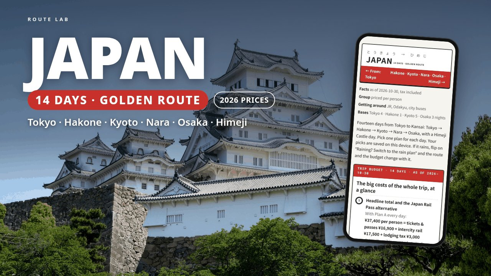

14-DAY ITINERARY · JAPAN
Two weeks on the route most first trips to Japan follow: four days in Tokyo, a ryokan night in Hakone, Kyoto with a day in Nara, then Osaka and a day at Himeji Castle, flying home from Kansai Airport.
This page is a free outline of the itinerary: where each part of the trip goes, what is in the files and who it suits. The download adds the stop-by-stop times, a map link and a checked price for every stop, and a budget that adds itself up as you pick.

The cities and main stops for each part of the trip. Every day in the download has two versions and a rain plan, with times, the order, a map link and a price for every stop.
Shinjuku, Senso-ji with the Tokyo National Museum or Skytree, Meiji Jingu, Harajuku and Shibuya, then a free day in Kamakura for the Great Buddha, or Tokyo's old town.
The Romancecar and the full Hakone Freepass loop: mountain train, cable car, the ropeway over Owakudani and the lake boat. A night in a ryokan, then the shinkansen to Kyoto and an evening in Gion.
Fushimi Inari at dawn, Kiyomizu-dera and Higashiyama (or the Nov 21–30 night viewing), Kinkaku-ji and Arashiyama, a Nara day with Todai-ji and the deer (or Uji instead), and a free day on the Philosopher's Path.
Osaka Castle and Dotonbori, a day trip to Himeji Castle with Kokoen garden (or Kobe in the afternoon), Universal Studios Japan or Kuromon Market and Shinsekai, then the train to Kansai Airport.
Want more time in one city? See Tokyo in 5 days and Osaka & Kyoto in 4 days.
First-time visitors who want the whole Tokyo to Osaka route laid out day by day, with the cost worked out. It works on most dates, but check closures first: the Tokyo National Museum is closed on most Mondays and Dec 26–31, 2026, and parts of the Hakone Ropeway run as buses in Dec 2026 and Jan–Feb 2027.
It doesn't book anything and doesn't update itself. Hotels, ryokan, train seats, Universal Studios tickets and restaurant reservations are up to you.
US$15 on Gumroad. Personal use: for your own trip and the people you travel with. If the file is broken or won't open, you get a fix or a full refund within 14 days.